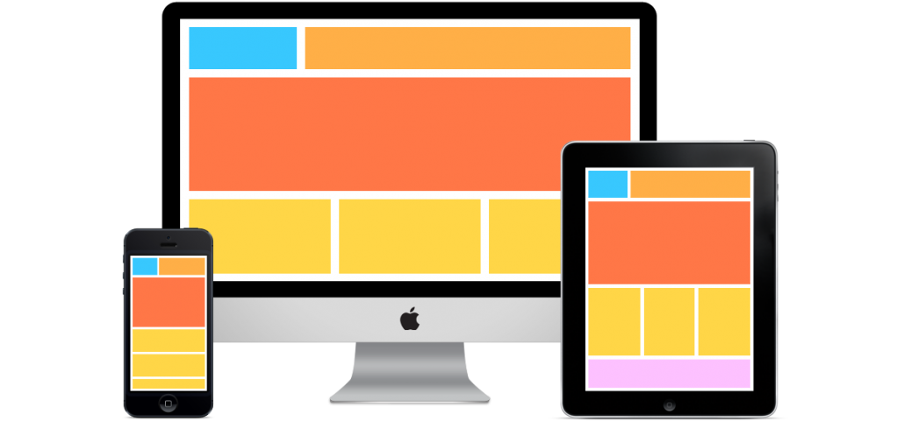
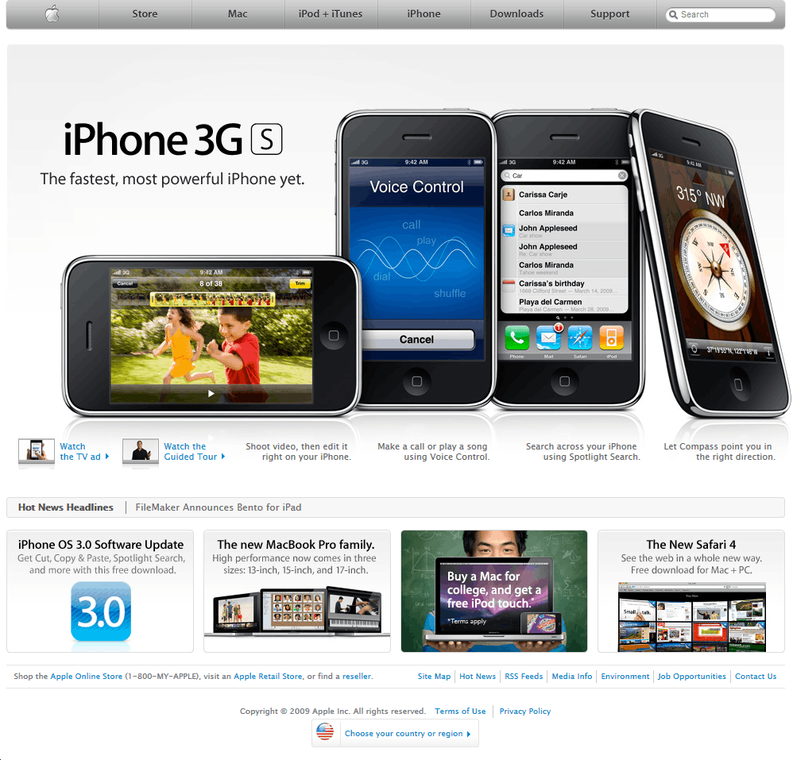
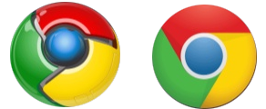

2007-2014: новая эпоха дизайна - адаптивность

Новаторство Apple - смартфоны
29 июня 2007 года был выпущен первый iPhone, открывший новую эру веб-дизайна. Хотя Apple не изобрела смартфон, они сделали его основным направлением деятельности. сделать веб-сайты доступными на мобильных телефонах впервые стало приоритетной задачей. Хотя до гибкой прокрутки и навигации, ориентированной на мобильные устройства, оставалось еще несколько лет, эра мобильных устройств уступила место «плоскому» дизайну».
Перейти

Cквеморфизм против Flat
2014 - Material дизайн
Появившееся в 2014 году и актуальное сейчас направление дизайна Material дает еще больше возможностей для веб-дизайнеров. Принципы данного направления:
1. Тактильные поверхности
2. Полиграфический дизайн
3. Осознанная анимация
4. Адаптивный дизайн